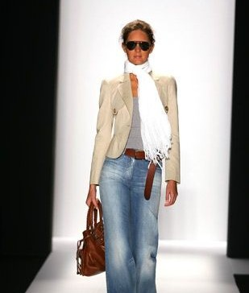
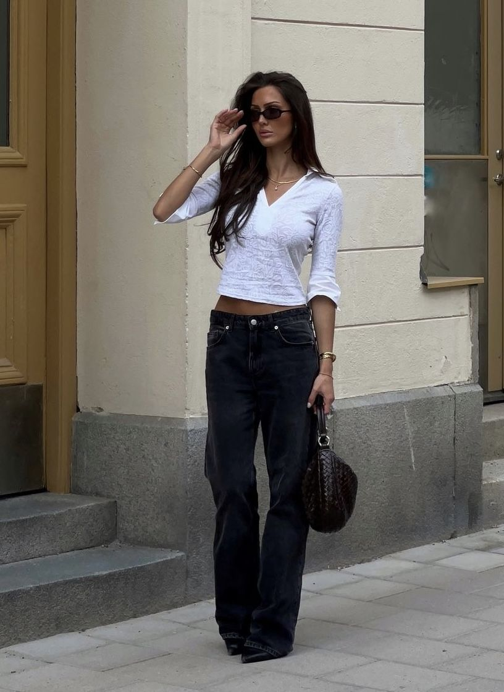
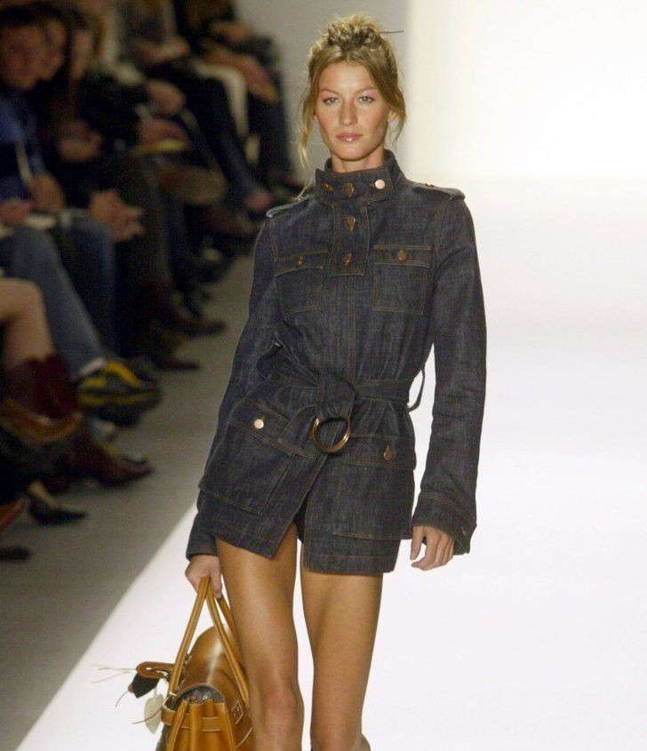
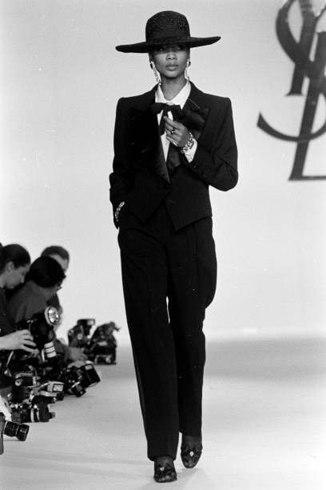
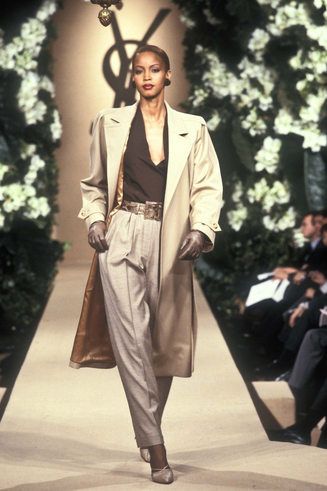
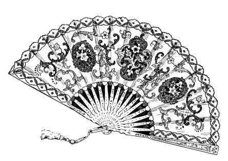

THE PHRASE SOUNDS CONTRADICTORY. CASUAL MEANS EASE, COMFORT, LOW EFFORT. CHIC MEANS SOPHISTICATION, INTENTION, TASTE. TOGETHER, THEY DESCRIBE SOMETHING SPECIFIC: CLOTHING THAT LOOKS REFINED WITHOUT FEELING FORMAL. CASUAL CHIC ISN'T A RIGID AESTHETIC WITH STRICT RULES. IT'S A PHILOSOPHY. THE GOAL IS LOOKING LIKE YOU MADE GOOD CHOICES — NOT LIKE YOU TRIED TO IMPRESS ANYONE.
PICTURE THIS: A PLAIN WHITE TEE TUCKED INTO WIDE-LEG TROUSERS WITH CLEAN SNEAKERS IS CASUAL CHIC. THE SAME TEE WITH SWEATPANTS IS JUST CASUAL. THOSE SAME TROUSERS WITH A BLAZER AND HEELS TIPS INTO BUSINESS TERRITORY. THE BALANCE MATTERS.


The casual style as we relish it today took its definitive form in the late 1940s to early 1950s. Flourishing alongside the edgy Teddy Boy subculture. The term 'Teddy Boy' came to life in 1953, encapsulating the essence of young, spirited men from the working class who boldly mirrored the aristocrats' 'upper class', clothing themselves in the sophisticated allure of the Edwardian era.
Their style was a parade of finesse—flaunting meticulously tailored, tight, cropped trousers, warm jackets with velvet collars, meticulously slicked-back hair, refined brogue shoes, and a color palette that danced between shades of grey, beige, brown, and black, often adorned in tasteful check patterns.
Most style aesthetics have limits. Maximalism is exhausting to maintain. Minimalism can feel cold. Streetwear skews young. Preppy skews context-specific. Casual chic has almost no limits — it works across ages, body types, climates, and occasions.
It's also the aesthetic that ages best. The pieces that define casual chic — a well-cut dress, quality trousers, a good coat — don't expire. They accumulate into a wardrobe that feels personal and considered rather than trend-dependent.
That's the deeper appeal. Casual chic isn't just a look. It's a relationship with clothing that prioritizes lasting value over momentary novelty.

Style Tips & Outfit Ideas
Fit is everything in casual chic. Clothes should sit well on your body without being too tight or too loose. Avoid baggy or shapeless pieces that can make you appear sloppy. When clothes fit properly, even basic items look expensive and intentional.
This is the heart of casual chic. You blend everyday items with refined ones to create balance. Pair a basic white tee with tailored trousers. Wear a silk blouse with dark denim. Add a blazer over a simple dress. The contrast between relaxed and polished pieces creates visual interest. This mix-and-match approach also makes your wardrobe more versatile.